A field guide to the ENTHEA visualizer hosted inside this Classic Winamp player.
Every control on the pledit chrome, every look, every one of the 29 GPU modes —
with the neuroscience and mathematics behind it explained the way you would explain
a shader and a signal path to another computer engineer.
Read this first
Photosensitivity. ENTHEA draws bright, rapidly changing patterns.
The first time you open the panel, the app shows a notice. Flicker drive stays
off in this host. If you have photosensitive epilepsy or migraine, close the Visualizer.
Simulator only. Looks are artistic interpretations of reported visual
phenomenology — not dosing advice, not sourcing, not medical advice.
Upstream ENTHEA’s own pact, which this host inherits:
“This is a simulator — visual phenomenology rendered from math.”
— elder-plinius/ENTHEA
ENTHEA is not an inline widen of the main player. It is a separate managed window
in the same docking system as the equalizer and playlist. It starts closed.
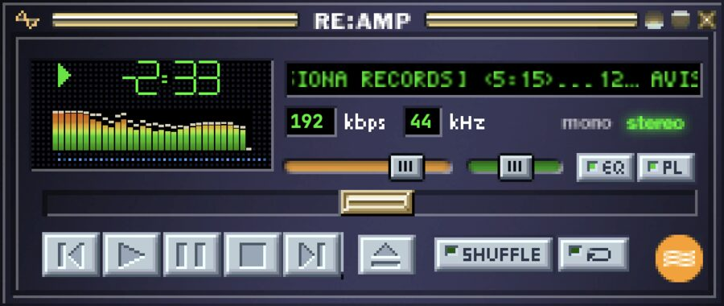
Main player. The 76×16 mini spectrum is the ENTHEA door.
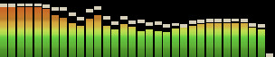
Mini LCD — Metal, not WebKit. Double-click opens ENTHEA.
Action
What happens
Double-click the mini spectrum (main window or shade strip)
Show / hide the Visualizer panel
Title-bar options menu (left of “WINAMP” / “RE:AMP”) → Show Visualizer
Same toggle
Close box on the ENTHEA title bar, or Hide Visualizer
Tears down the WebView (WebContent process exits)
The mini spectrum stays Metal on purpose. Embedding a second WebView in a 76×16 slot
would be absurd; double-click is the handoff into the real panel.
Anatomy of the window
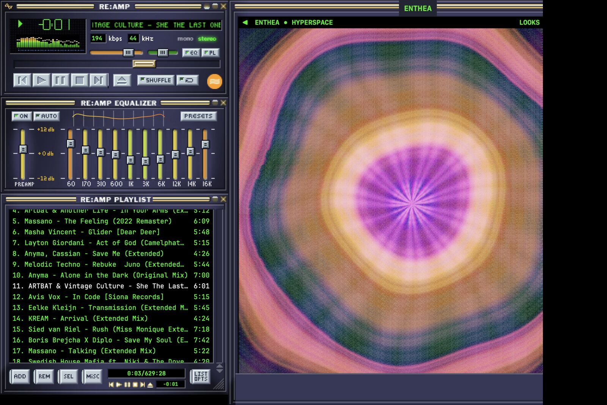
Default dock: main + EQ + playlist in a column; ENTHEA to the right of main.
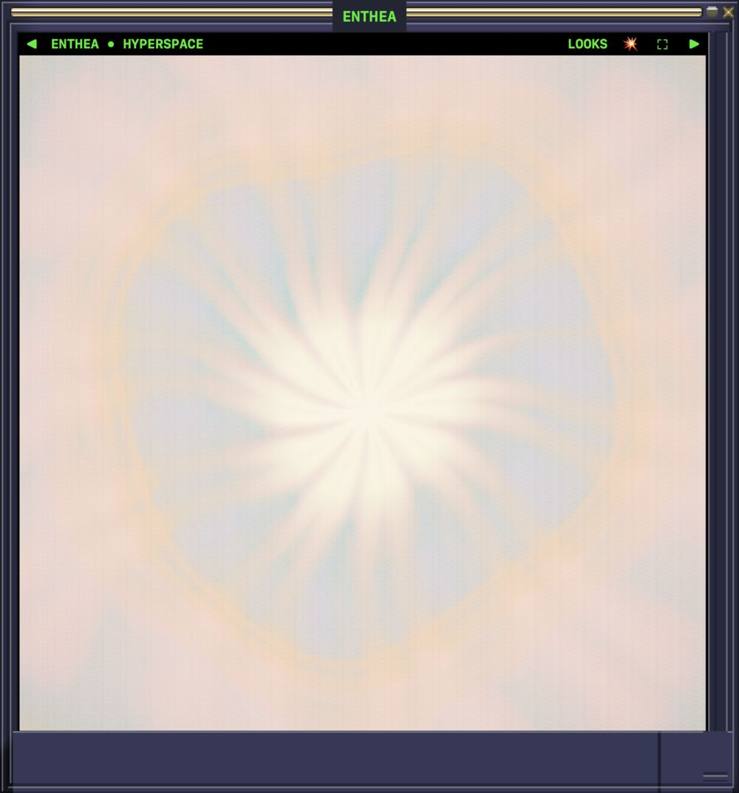
The panel body is ENTHEA’s WebGL2 canvas. Classic pledit chrome wraps it.
Three chrome bands, from top to bottom:
Title bar — drag the window; theater / shade / close on the right.
Control strip — every live visualizer command lives here.
Bottom bar — pledit footer; resize from the bottom-right grip.
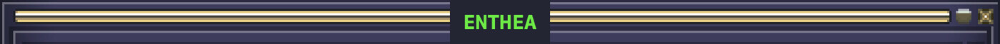
Title bar. The three right-hand hits are theater, shade, close (clear hit targets on the skin squares).
Every control
1 · ◀ Previous mode. Hold ⇧ to lower dose instead.
2 · Title Click: autopilot on/off. Double-click: reseed.
4 · 💥 Force a drop effect from the nine-effect arsenal.
5 · ⛶ Theater (fill the display). Icon becomes ▣ while there.
6 · ▶ Next mode. Hold ⇧ to raise dose instead.
1–6 · Mode previous / next
Cycles the 29-mode list (see Modes). Clicking either arrow
turns autopilot off so you keep the mode you picked.
The strip title then reads ENTHEA • MODE NAME instead of
ENTHEA • AUTOPILOT.
⇧ + ◀ / ▶ · Dose
Dose is a 0…1 scalar inside ENTHEA. In cortical modes it is coupling/gain
(how hard the Turing instability is driven). In others it scales warp, saturation,
void, or pulse. Each nudge is ±0.05. There is no on-screen dose readout in this host;
you feel it. Upstream ENTHEA binds this to the arrow keys — those keys are
neutered here so they stay with volume / playlist.
2 · Strip title · Autopilot
Autopilot (upstream “journey”) crossfades through modes like a directed show,
with scene transitions, rather than a hard cut. It defaults on
and is persisted. Click the title to toggle. Pick a LOOK or a manual mode and
autopilot turns off so it cannot yank you away.
2 · Double-click title · Reseed
Sets S.reseed = 2. Reaction–diffusion, neural-field, and lizard-scale
modes are initial-value problems: they remember their grid. Reseed drops a new
perturbation so the PDE can fall into a different pattern. Harmless on modes that
are pure closed-form functions.
3 · LOOKS
Fourteen phenomenological presets. Each one is an ENTHEA SUBSTANCES
profile applied as a visual signature only (mode + palette + dose + FX).
This host does not start the timed come-up→peak “trip arc”
(beginTrip is never called). Copy in the menu is deliberately
non-medical: “Electric Lattices”, not “LSD”. Full table under Looks.
4 · 💥 · Force drop
Fires one of nine festival-grade effects immediately, without waiting for the
predictive timeline. Same entry point as a detected drop. See Drops.
5 · Theater
Expands the panel to the display frame (including the menu-bar / notch band),
hides pledit chrome, keeps the same WebView (so in-page state survives).
This is notNSWindow.toggleFullScreen — the window is borderless.
Enter
Exit
⛶ on the strip, title-bar theater hit, or F while the visualizer is key
Escape, F again, or ▣ on the strip
Title bar · Shade / close / drag
Control
Behaviour
Drag the title (not the three right buttons)
Move the panel; docking / snapping still apply
Shade (middle square) or double-click title
Windowshade: body unmounts, WebView tears down, strip of pledit shade remains
Close (X)
showVisualizer = false
Resize grip
Bottom-right of the pledit footer. Width cannot go below the Classic main width
(275 × Zoom); height has a minimum so the strip stays usable. Backing resolution
is clamped to a ~2.0 megapixel budget so theater does not drop to 24 fps on heavy modes.
Keys that still work — and keys that do not
ENTHEA’s own keyboard (space cycles mode, A autopilot, D drop,
1–8, …) is killed at capture phase so Space stays play/pause
and playlist hotkeys keep working. The host remaps a subset onto the strip and F / Escape.
Signal path
ENTHEA is worth vendoring because of its analysis chain, not because of a skin.
The host does not invent a feature contract. It impersonates a Web Audio
AnalyserNode and lets ENTHEA’s own DSP run unmodified.
Why 512 linear bins instead of the 32 log bands the Metal mini-viz uses:
ENTHEA indexes frequency linearly and computes spectral flux as a bin-wise
frame difference. Upsampling 32 log bands would stair-step; flux would be
~zero except at the handful of step edges; beat lock would fail silently
while the picture still “moved.”
Playback stopped, panel shaded/hidden, or window occluded: render loop goes to
0 fps and audio IPC pauses. Showing the panel again reboots the WebView in
a few hundred milliseconds.
The Bressloff–Cowan pipeline (cortical modes)
For Form Constants / Neural Field, the research story is a pipeline you can
read as a graphics graph:
Wilson–Cowan / Amari neural field on a 2-D cortical grid
→ Turing instability → stripes / squares / hexagons
→ inverse Schwartz complex-log map (retina ← V1)
→ Klüver’s four form constants
tunnels/funnels · spirals · lattices/honeycombs · cobwebs
Schwartz’s map is the reason a stripe on cortex does not look like a stripe
in the world: ganglion density ρ ∝ 1/(w₀ + ε r)² (Drasdo 1977;
w₀ = 0.087, ε = 0.051). Far from the fovea it is just log(z) —
circles on the retina become vertical V1 stripes, rays become horizontal,
log-spirals become oblique. Invert that, and the zoo of geometric hallucination
falls out. Full equations:
SCIENCE.md.
Drops
Two clocks feed the same 💥 arsenal.
Predictive (automatic)
When a track starts, EntheaTrackAnalyzer reads the file natively
in Swift (never handed to WebKit), walks a hop-framed energy envelope, and
emits drop times plus low/high energy sections. That object is assigned to
ENTHEA’s S.timeline; a shim AUDIO.fileEl.currentTime
follows the real playhead. ENTHEA can therefore ramp tension before
the downbeat — the same idea as a DAW locator, not a reactive threshold on
the live FFT.
Forced (💥)
Bypasses the timeline and fires immediately. AUTO picks a fresh effect each time:
Wormhole. Log-polar punch through the field
Supernova. Exposure blowout + bloom
Kaleido shatter. Dihedral fold snaps to a new n
Negative. Push the grade through inversion
Zoom punch. Transient camera dolly
Glitch. Displacement / slice artifacts
Shockwave. Radial ripple from centre
Mandala burst. Brief Dₙ explosion
Time echo. Feedback delay smear
Looks
Menu label → visual signature. Ids in EntheaLookPreset match
upstream SUBSTANCES. Receptor→feature mapping is
not established science (ENTHEA’s own SCIENCE.md marks it
refuted / phenomenological). These are shader presets with research-flavoured names.
Klüver 1966 — mescaline was the substance he studied
aya
Serpentine Vines
Deep vine-like phasor filaments
Vines
Shanon 2002 — serpentine / vine motifs
2cb
Neon Quasicrystal
Sharp neon N-fold interference
Quasicrystal
Phenomenological SEI; Shulgin PiHKAL
ket
Dissociative Drift
Slow hyperspace / tunnel drift
Hyperspace
Dissociative phenomenology, not serotonergic geometry
salvia
Planar Fold
Sudden warped planar folds
Sacred Geometry + shear
κ-opioid phenomenology; “sheets tearing” reports
mdma
Soft Glow Pulse
Warm pulsing colour wash
Breathing Walls (gentle)
Empathogen: enhancement, not lattice hallucinations
cannabis
Hazy Trails
Soft trails and mild warp
Breathing Walls + Entoptic
Mild tracers over a snow field
n2o
Wobble Spike
Short wobbling intensity spikes
Hyperspace (pulsed)
Brief rhythmic “wah-wah”; hypoxia is a real-world risk, not a visual
5meo
Whiteout Field
High-energy near-featureless field
Hyperspace toward void
Uthaug et al. 2019 — ego-dissolution literature; mostly non-visual
amanita
Dream Lattice
Dreamlike soft lattice motion
Wave Crystal
GABAergic oneirogen; macropsia mapped to breathers
iboga
Nocturnal Geometry
Dark slow nocturnal geometry
Breathing Walls (slow)
Alper 2001; oneirogen / life-review reports, not 5-HT2A lattices
Artistic visual interpretations only — not dosing advice, not medical advice; simulator only.
The 29 modes
One GLSL uber-shader, 29 uMode branches. Ten of the later modes
were proposed by a multi-agent “math-mining” workflow in the original project
and then turned into shaders — they are honest mathematical objects, not stock
MilkDrop presets. Screenshots below are the live WebGL canvas.
Inverse retino-cortical map of cortical plane waves
Think of primary visual cortex as a 2-D GPU framebuffer whose pixels are orientation-tuned neurons. Simple plane waves on that buffer — stripes, squares, hexagons — are what a Turing instability actually produces. The optic nerve does not deliver a 1:1 picture: ganglion density falls off with eccentricity, so the retina→V1 map is approximately a complex logarithm (Schwartz). Invert that map and a vertical cortical stripe becomes a tunnel, a horizontal stripe becomes a fan, an oblique stripe becomes a spiral, and a superposition becomes a honeycomb. This mode synthesises those cortical planforms and runs them backward through the log map. It is the same transform you would write as z ↦ log(z) if you were sending a texture through a polar warp.
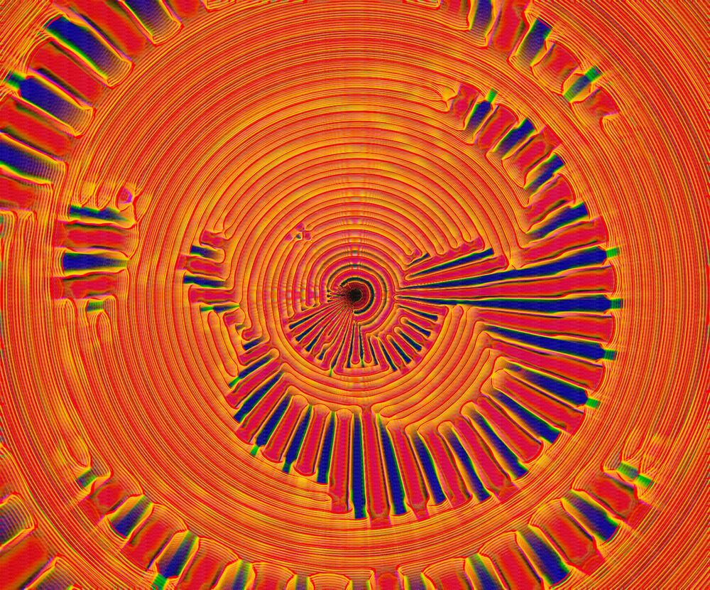
Mode 01 · NEURAL FIELD
Cortical / hallucination
Neural Field
Live Wilson–Cowan field · Turing bifurcation
This is not a texture. It is a PDE on a 2-D grid, integrated on the GPU every frame: each cell’s activity decays, is convolved with a Mexican-hat kernel (short-range excitation minus long-range inhibition — a difference of Gaussians), then passed through a sigmoid. Below a critical coupling the flat rest state is stable; above it a non-zero spatial frequency goes unstable and stripes/spots appear spontaneously. That is a Turing bifurcation, the same class of instability that makes spots on a leopard. Dose in this app is a gain/coupling knob on that field. Reseed drops a new perturbation so the pattern can settle into a different basin.
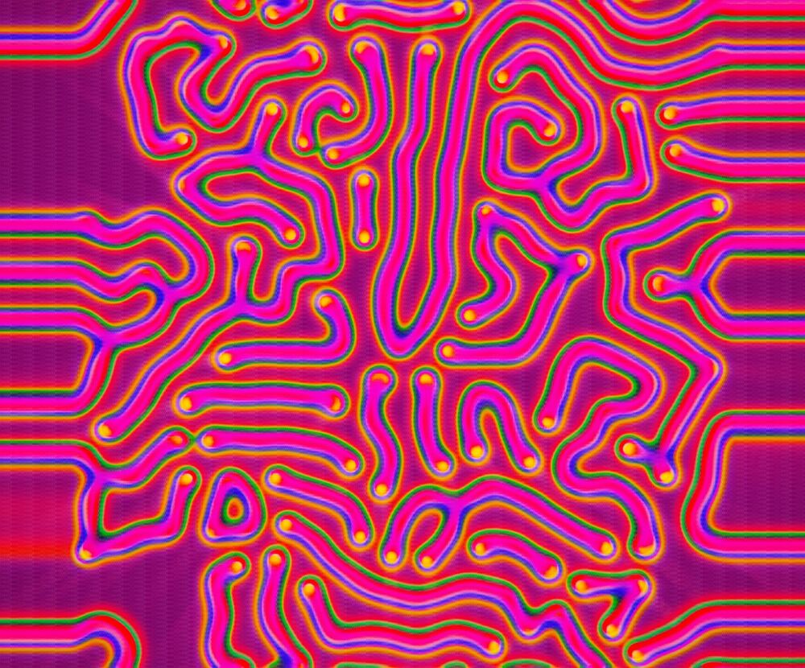
Mode 02 · TURING FLUX
Reaction–diffusion
Turing Flux
Gray–Scott morphogenesis
Two scalar fields U and V live on the same pixel grid. They react (U is consumed to make V) and they diffuse at different rates. Because the inhibitor spreads farther than the activator, a uniform mixture cannot stay uniform: spots, stripes, and labyrinths nucleate from noise. This is Gray–Scott, a well-studied instance of Turing’s 1952 morphogenesis. The shader runs several PDE steps per video frame; nothing is a pre-baked loop. Reseed injects fresh noise. If you have ever implemented a reaction–diffusion demo, this is that demo driving the visualizer.
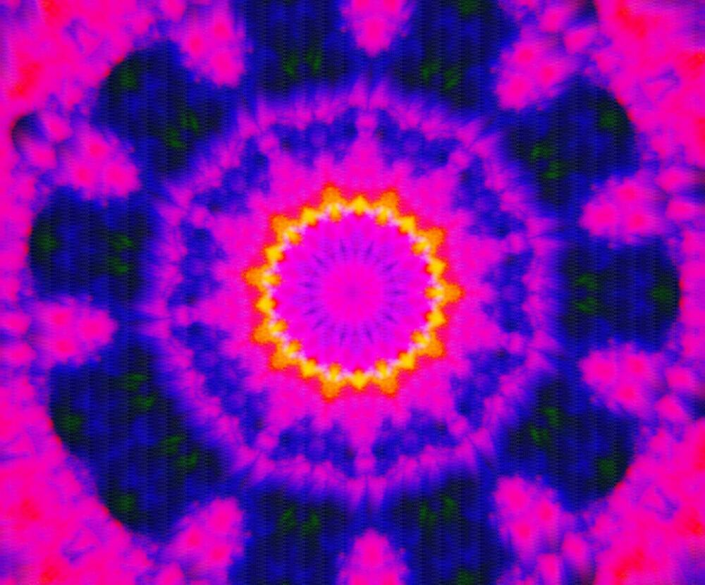
Mode 03 · SACRED GEOM
Geometry / symmetry
Sacred Geometry
Phyllotaxis · dihedral Dₙ
Dihedral group Dₙ is the symmetry of a kaleidoscope: n mirrors around a point. Inside that fold sits a Fermat spiral of seeds at the golden angle ψ = 2π(1 − 1/φ) ≈ 137.5°, the same packing sunflowers use because it maximises packing density. You can think of it as instantiating n copies of a point set under rotation, then placing points at radius √k and angle k·ψ. Audio nudges n and the spiral scale so the mandala breathes with the track.
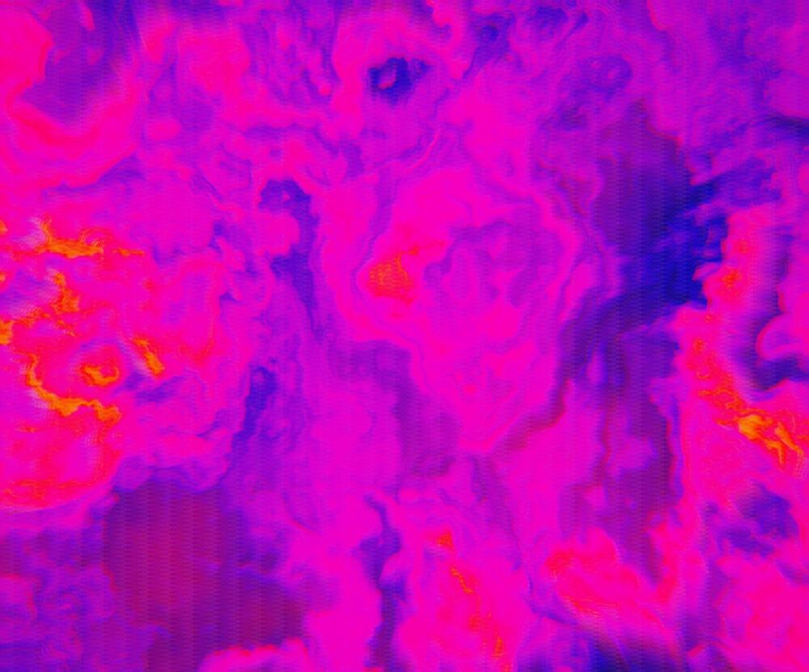
Mode 04 · BREATHING WALLS
Flow / texture
Breathing Walls
Domain-warped fractional Brownian motion
Domain warping is the graphics trick of feeding a noise field back into its own sample coordinates: fBm(p + fBm(p + fBm(p))). One octave of noise looks like clouds; warping it twice makes slow, coherent spatial folds — the “walls breathing” percept. Persistence (motion trails) is just a feedback buffer, the same idea as a video delay. There is no cortex simulation here; it is a procedural texture that happens to match a commonly reported visual. Inigo Quílez popularised the technique; Mandelbrot supplied the fBm.
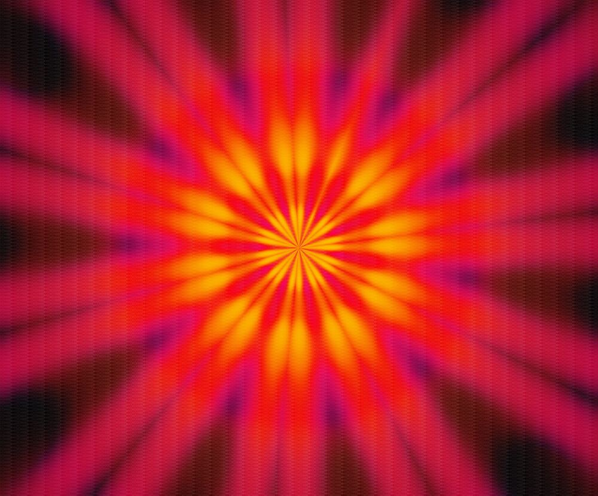
Mode 05 · HYPERSPACE
Geometry / fractal
Hyperspace
Phenomenological tunnel composite
A log-polar tunnel (the deepest Klüver constant: radius becomes depth) is kaleidoscoped, then iterated with fractal detail and video feedback. In graphics terms: polar warp + dihedral fold + fBm + a feedback texture. It is a composite of primitives already in the engine, not a new physical model. High dose / high complexity make the chamber denser. ENTHEA flags this as phenomenological, not a pharmacological claim.
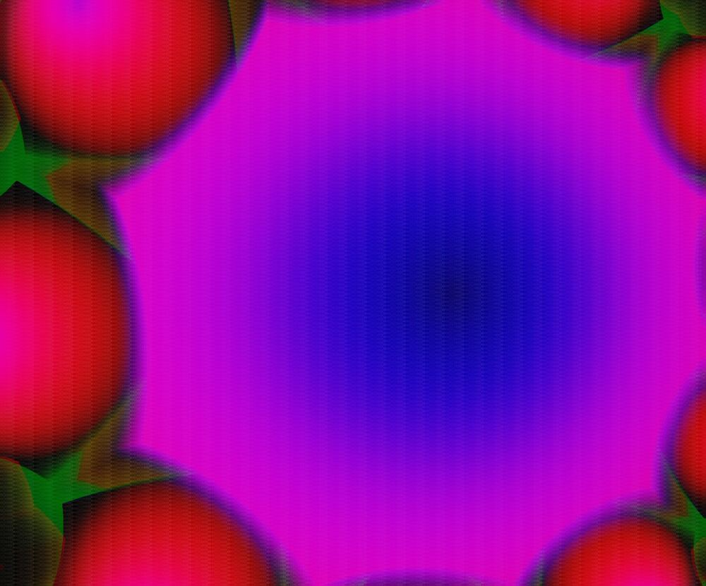
Mode 06 · HYPERBOLIC
Geometry / fractal
Hyperbolic
Poincaré disk · speculative
Hyperbolic geometry is the geometry of a saddle: area grows exponentially with radius. The Poincaré disk model packs that infinite plane into a Euclidean unit disk via circle inversions (the isometries of the model). {p,q} tilings shrink toward the boundary exactly because of that exponential area. If you have inverted a point through a circle in a shader, you have the generator. The Qualia Research Institute hypothesised that some DMT geometry is negatively curved; ENTHEA includes the tiling as a frontier idea and labels it unverified.
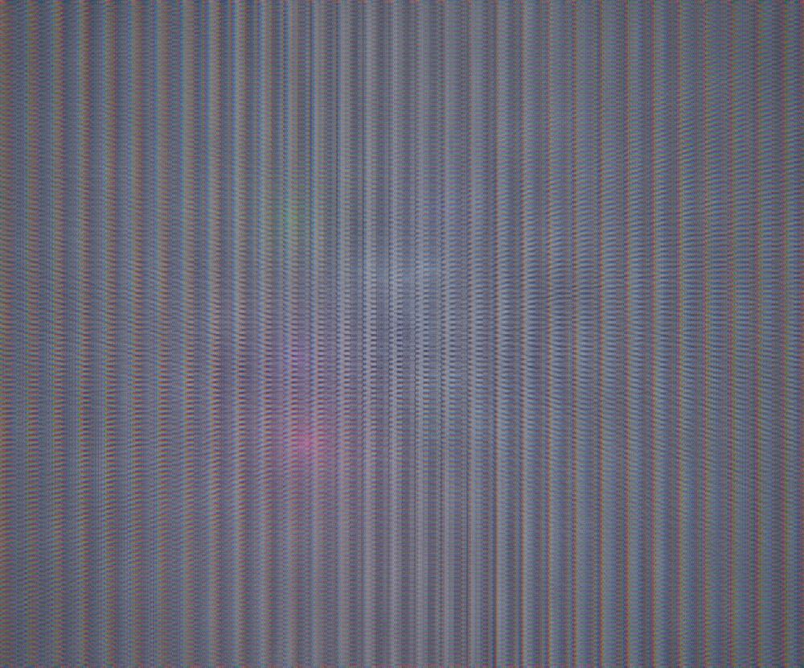
Mode 07 · ENTOPTIC
Cortical / hallucination
Entoptic
Visual snow · Scheerer’s blue-field
Entoptic phenomena are generated inside the eye or visual pathway, not out in the world. Visual snow is high-frequency spatiotemporal noise — a dither field. Scheerer’s blue-field effect is white blood cells in retinal capillaries becoming visible against blue light as bright dots on looping paths. This mode is a particle/noise shader: a hashed snow field plus corpuscles advected along capillary-like arcs. It is the “static on the CRT” of the visual system.
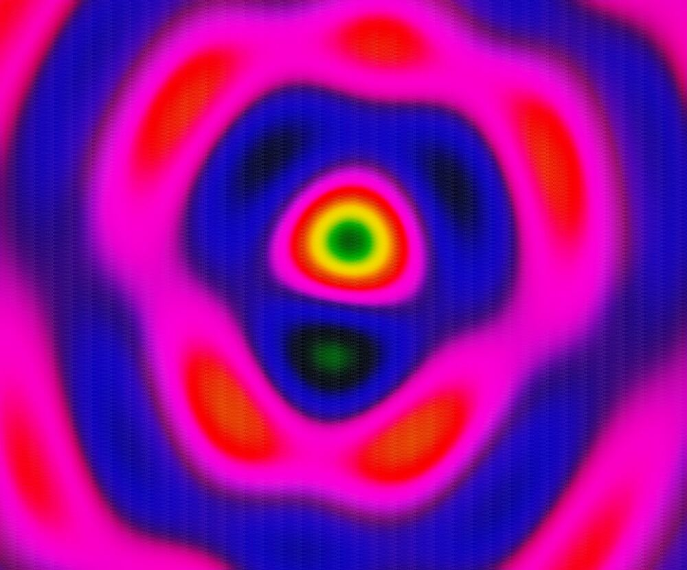
Mode 08 · QUASICRYSTAL
Waves / tilings
Quasicrystal
N-fold plane-wave interference
Sum N plane waves at evenly spaced angles: Σ cos(p · uᵢ + φ). For N = 4 you get a periodic lattice. For N = 5, 7, … you get quasiperiodic order: sharp diffraction peaks, no repeating unit cell, forbidden rotational symmetry. That is the same interference that produces Penrose-like patterns and, in metallurgy, Shechtman’s quasicrystals. Bass shifts φ so the lattice breathes. Symmetry in the host is the LOOKS / dose path into N.
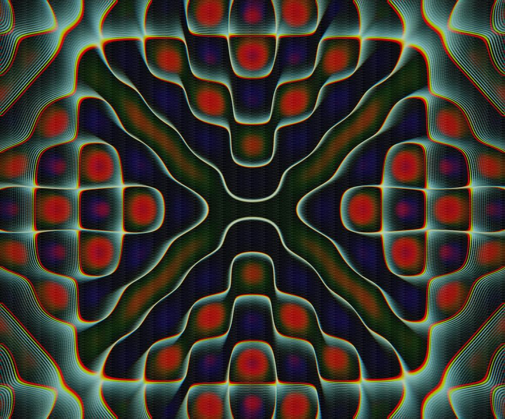
Mode 09 · CYMATICS
Waves / tilings
Cymatics
Chladni nodal sets
Chladni figures are the zeros of a vibrating plate: sand gathers where amplitude is zero. On a square plate the eigenmodes look like cos(nπx)cos(mπy) − cos(mπx)cos(nπy) = 0. Mid and treble bands pick (n, m), so the track is literally selecting which standing-wave mode you see. It is the most honest audio visualizer in the set — a plot of the wave equation, not a metaphor.
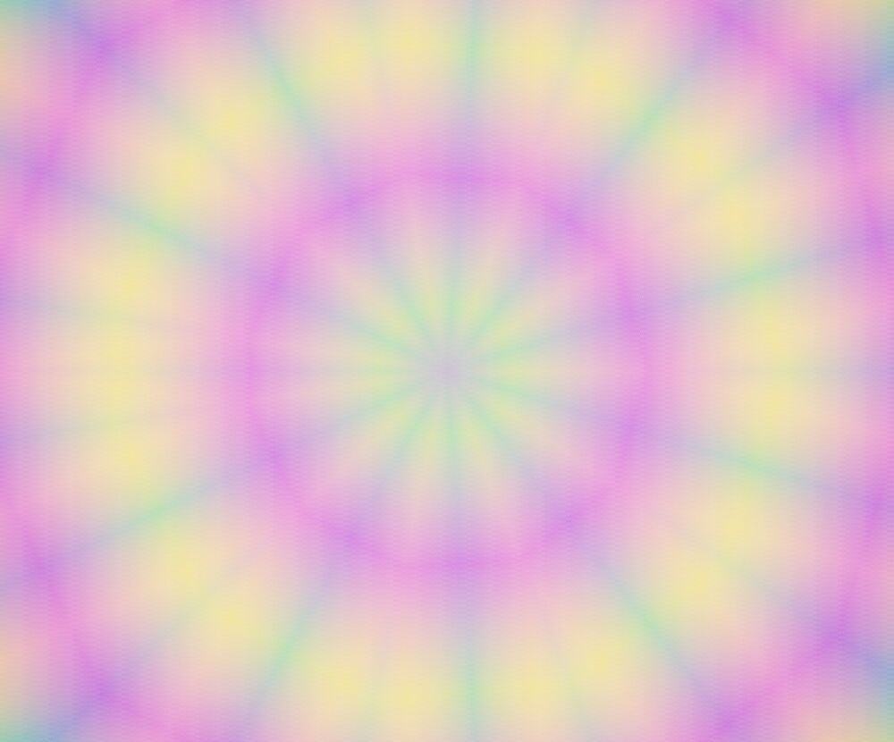
Mode 10 · IMAGE WARP
Instrument
Image Warp
Album art → kaleidoscope + palette
The host loads embedded cover art natively, downscales it, and pushes a JPEG data URL into the WebView. ENTHEA uploads it as a GL texture, kaleidoscopes and domain-warps it, and extracts a 6-colour palette (sampled as a 6×1 blit, converted to linear). If the current track has no artwork the texture stays empty and this mode is quiet. Switching here is automatic when art arrives; you can still land on it with ◀ / ▶.
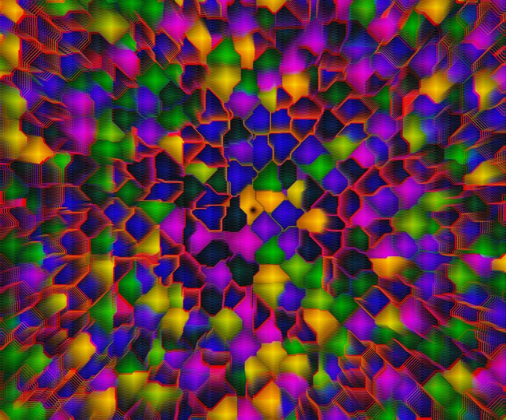
Mode 11 · CELLULAR
Flow / texture
Cellular
Worley F1 / F2−F1
Scatter feature points. Every pixel belongs to its nearest point — that partition is a Voronoi diagram (1908). Worley’s SIGGRAPH trick is to also use the second-nearest distance: F1 shades each cell into a dome (scales); F2−F1 lights the walls (veins). Swapping the metric (L² / L¹ / L∞) reshapes the lattice from round to diamond to square. Bass drives site density. Same primitive as every “cellular noise” node in a shader graph.
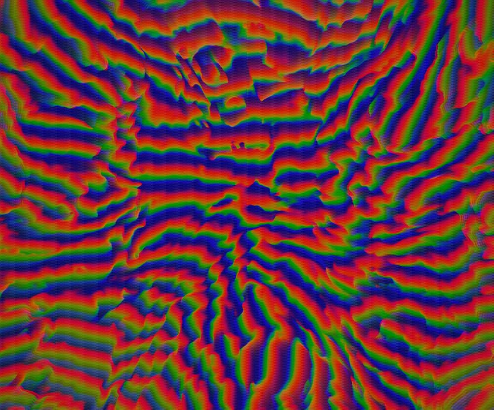
Mode 12 · VINES
Flow / texture
Vines
Phasor noise · Gabor kernels
Sum many oriented Gabor packets as complex numbers, take the argument of the sum, and sine-wave that phase. Contrast never washes out because you are looking at phase, not amplitude — the same reason a PLL stays locked. An fBm orientation field bends the filaments so they branch. This is phasor noise (Tricard et al., SIGGRAPH 2019), a real-time approximation of the spectral construction. Mids/treble twist frequency; it is procedural signal processing, not a vine texture atlas.
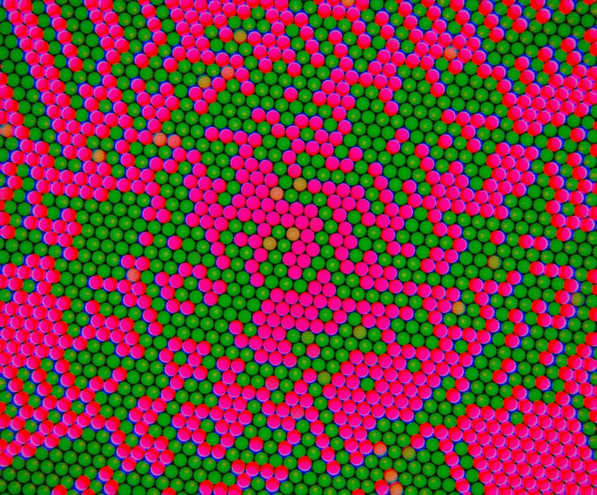
Mode 13 · DRAGONSCALES
Reaction–diffusion / life
Dragonscales
Living cellular automaton on a hex lattice
The ocellated lizard’s skin was shown in Nature (2017) to be a living cellular automaton: each hexagonal scale flips green/black from its neighbours and settles into a labyrinth — the discrete form of a Turing system. This mode runs that rule on the GPU (short-range agreement, long-range opposition, stochastic flips) and bevels each hex. It is Conway-adjacent, but the neighbourhood and the published biology are specific. Dose is how fast the skin equilibrates; reseed regrows it.
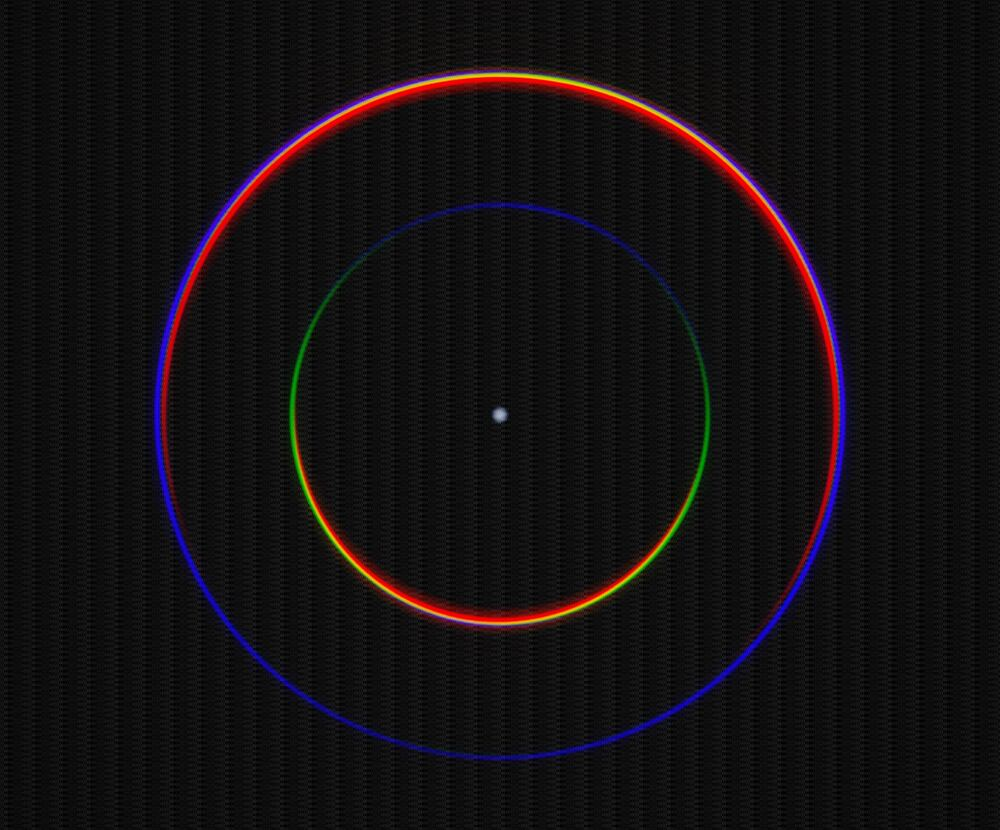
Mode 14 · WAVEFORM
Instrument
Waveform
Time-domain vectorscope
Every other mode reads the FFT. This one plots raw PCM: left on X, right on Y — a Lissajous / analog vectorscope. Mono collapses to a diagonal; a wide stereo mix opens into a blob; phase between channels twists it. The host already sends 2048 float samples per channel in the same push as the 512 FFT bins. If you have used a hardware goniometer on a mix bus, this is that display, driven by Winamp’s tap rather than a sound card.
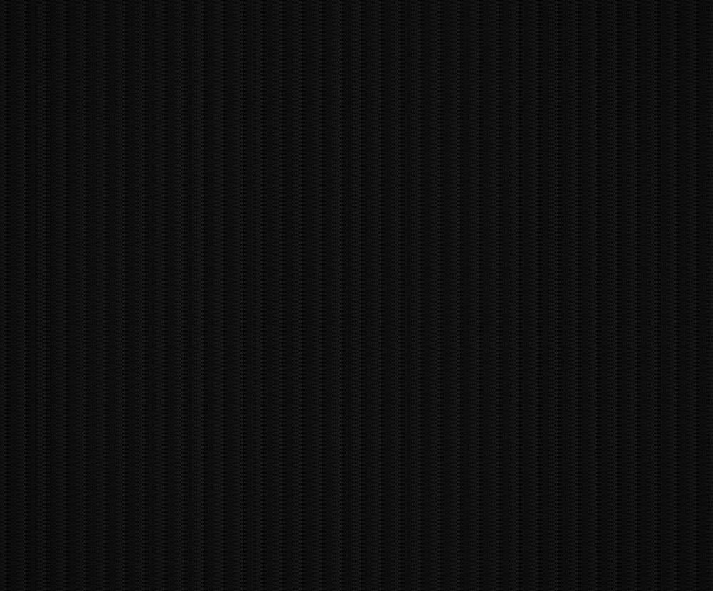
Mode 15 · FRACTAL
Geometry / fractal
Fractal
Raymarched Mandelbox
A Mandelbox is an iterated map: box-fold (reflect outside a cube), sphere-fold (invert through a sphere), then scale. Distance-estimate the result and sphere-trace a camera through it — the same technique as every shadertoy Mandelbulb flythrough. Bass morphs the fold scale so the architecture breathes. It is escape-time geometry, not a video of a fractal; the camera is a ray marching loop in the uber-shader.
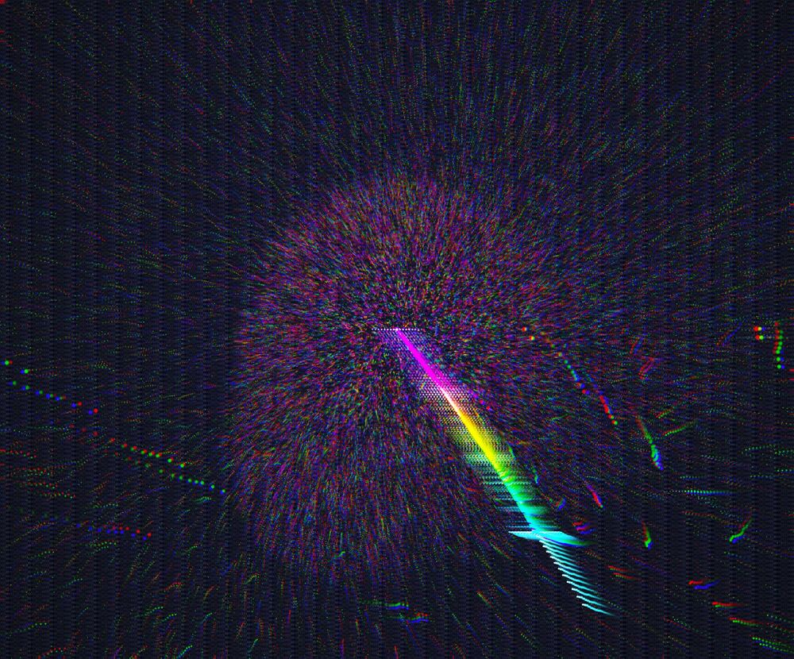
Mode 16 · PARTICLE FLOW
Flow / texture
Particle Flow
50k GPU particles · ABC flow
Fifty thousand points are advected on the GPU via transform feedback through the Arnold–Beltrami–Childress field, an exact divergence-free solution of Euler’s equations that is chaotic: streamlines braid and never pile up because ∇·u = 0. It is a particle system with a physically honest velocity field, not a curl-noise approximation. Level is speed; bass fattens points; a drop scatters the swarm.
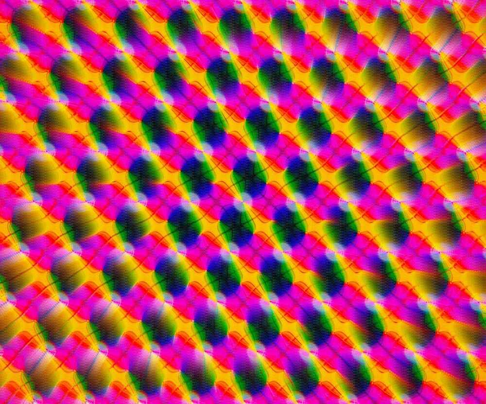
Mode 17 · WEIER WELLS
Complex analysis
Weierstrass Wells
Domain colouring of ℘(z)
Domain colouring paints a complex function on the plane: hue = arg f, brightness ~ log|f|. The Weierstrass ℘-function is elliptic (doubly periodic) with one double pole per lattice cell, so the phase winds −2 around every lattice point — a theorem, not a style. The shader truncates the Eisenstein sum (a 7×7 neighbourhood). Music shears the lattice modulus τ. If you have ever plotted a meromorphic function in MATLAB with a colour wheel, this is that plot, live.
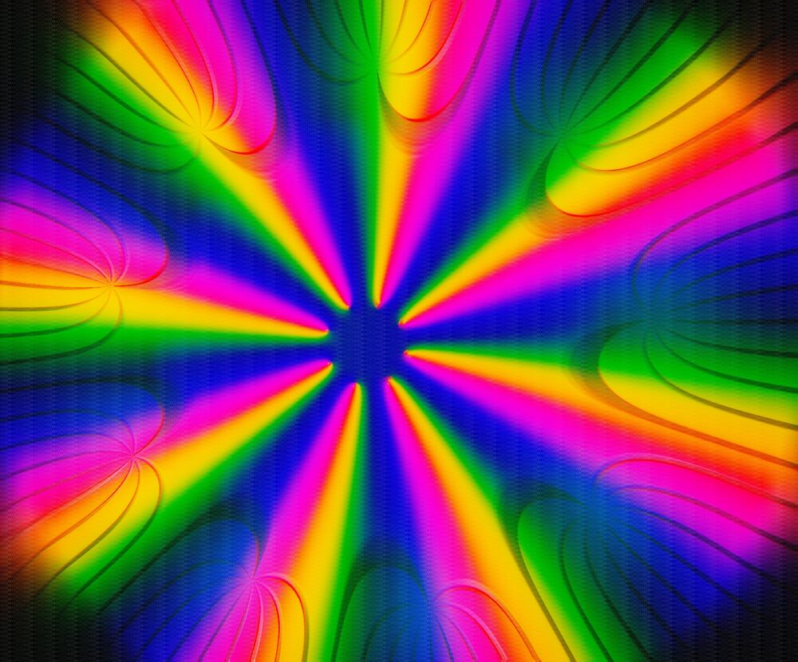
Mode 18 · BLASCHKE
Complex analysis
Blaschke Rosette
Finite Blaschke product, coloured by arg B′
A finite Blaschke product is a holomorphic map of the unit disk to itself: a product of disk automorphisms, one per zero. |B| = 1 on the circle; arg B winds n times; there are n−1 critical points. Colouring arg B′ (angular velocity of the conformal map) is unusual — most portraits colour B itself. Zeros orbit by disk automorphisms, so the flower rotates in the hyperbolic metric. Treat it as a phase portrait of a proper holomorphic map, not a kaleidoscope filter.
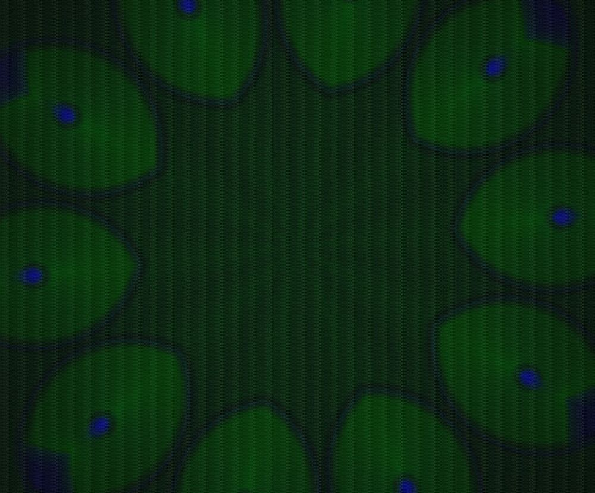
Mode 19 · INDRA
Geometry / fractal
Indra’s Necklace
Schottky / Kleinian limit set
A Schottky group is a free discrete group of Möbius transformations generated by circle inversions. Its limit set is a Cantor necklace of tangent circles — the subject of Mumford, Series & Wright’s Indra’s Pearls. Classically you orbit-plot on the CPU; here each pixel inverse-iterates until escape and uses the running derivative as a distance estimate to light the filament. Same family as Apollonian gaskets and Kleinian-group IFS.
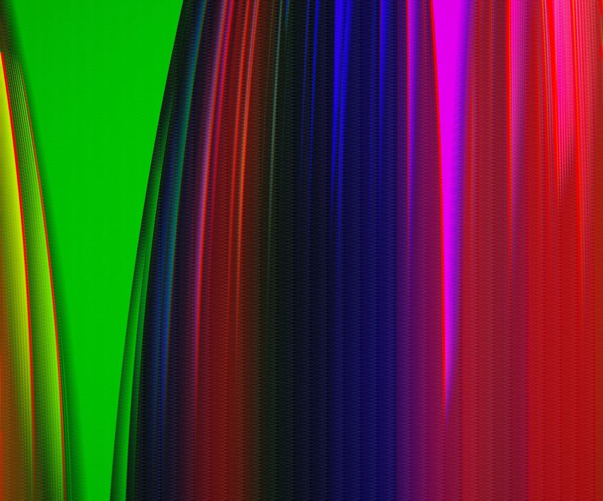
Mode 20 · ARNOLD
Dynamics / physics
Arnold Tongues
Sine circle map · devil’s staircase
The sine circle map θ ↦ θ + Ω − (K/2π) sin(2πθ) is the textbook model of two coupled oscillators (drive vs. natural frequency). In the (Ω, K) plane, the winding number locks to rationals p/q on wedge-shaped Arnold tongues; at K = 1 the locked intervals fill measure one (complete devil’s staircase). Horizontal is Ω (the track), vertical is K (loudness). You are looking at a parameter-plane plot of a 1-D iterated map, the same object Strogatz draws in lecture notes.
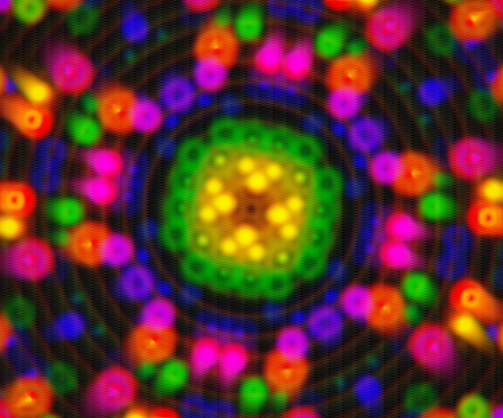
Mode 21 · GAUSSIAN HALO
Number theory
Gaussian Halo
Primes of ℤ[i]
Gaussian integers are the lattice ℤ[i]. A point a+bi is prime (up to units) iff its norm a²+b² is a rational prime — except on the axes, where it must be a prime ≡ 3 mod 4. Plotting those points gives the famous 4- and 8-fold scatter. Each prime is drawn as a ring whose spatial frequency tracks the norm, so you get number-theoretic moiré. Primality is tested live per pixel (trial division in the truncated window). It is a plot of a ring, not a noise texture.
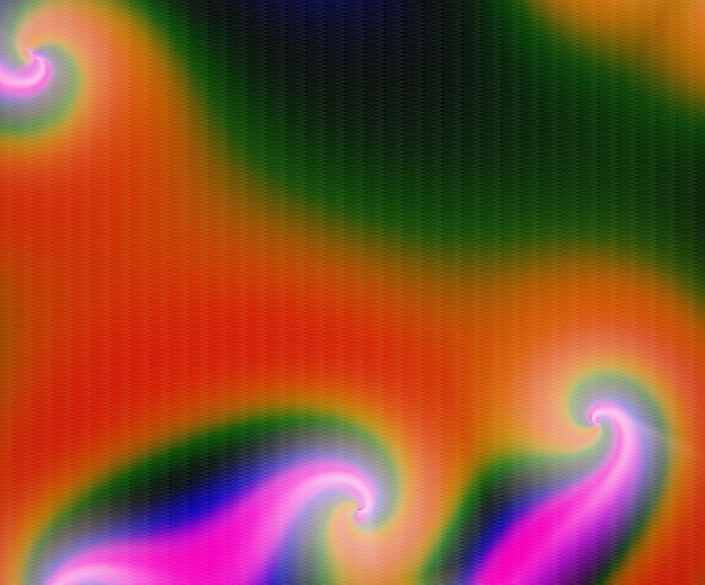
Mode 22 · DEFECT GAS
Reaction–diffusion / life
Defect Gas
Analytic spiral waves around phase defects
A topological defect of charge ±1 is a point where phase winds by 2π — a branch cut of arg(z − c). Sum several of them, then take cos(θ + radius − ωt), and you get rotating spiral waves around each core, the same geometry as Belousov–Zhabotinsky rotors or cardiac scroll waves. This is closed-form, not a PDE solve: cheap, exact singularities, interacting as the cores wander. Winfree’s rotors, not a reaction–diffusion simulation.
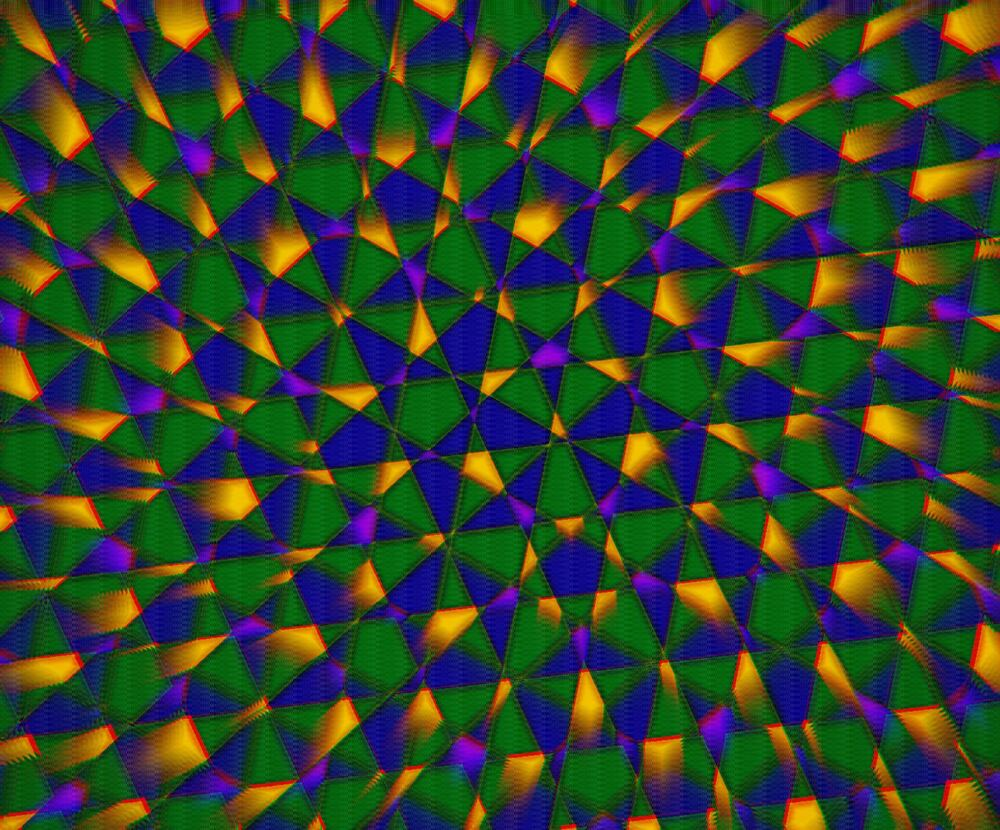
Mode 23 · PENTAGRID LOOM
Waves / tilings
Pentagrid Loom
de Bruijn pentagrid · Penrose dual
Five families of equally spaced lines at 72°. Each cell of the arrangement is named by five integers Kⱼ = ⌊p·eⱼ + γⱼ⌋; the dual of that grid is the Penrose rhombus tiling. Unlike the smooth N-wave QUASICRYSTAL, this is the actual multigrid construction: aperiodic 5-fold order with two rhombus classes. If γⱼ sums away from zero you get a genuine Penrose tiling rather than a periodic approximant.
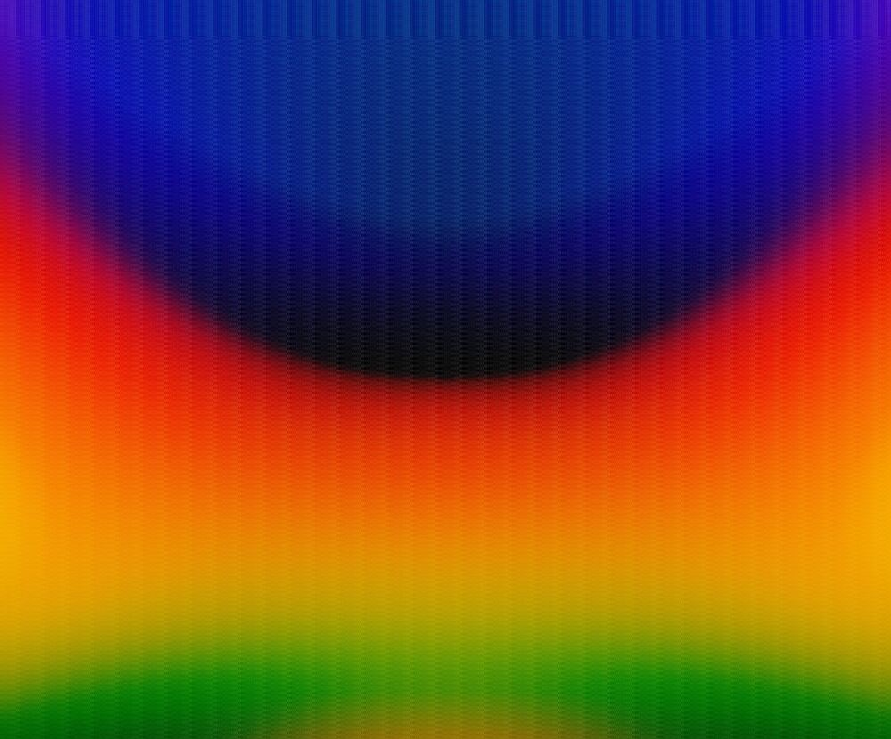
Mode 24 · ATOMIC BEAT
Dynamics / physics
Atomic Beat
Hydrogenic ψ · quantum beat
A 2-D slice of hydrogenic orbitals ψₙₗₘ = Rₙₗ(r) Yₗₘ(θ,φ), with associated Laguerre radials and Legendre angular parts. Superpose two stationary states with a relative phase e^{iωt} and |ψ|² sloshes — a real quantum beat (the cross term). Hue is arg ψ, brightness |ψ|², nodes go dark. Bass maps to ω artistically; it is not a physical energy gap. uSym raises ℓ (more lobes); complexity adds shells.
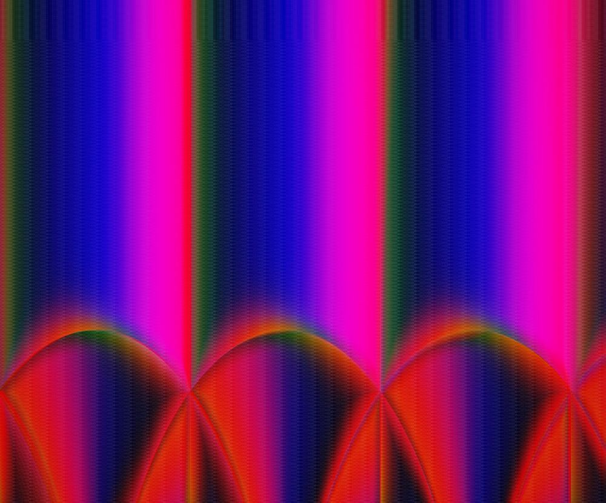
Mode 25 · DENOM DESCENT
Number theory
Denominator Descent
Modular group · Farey / Stern–Brocot
PSL(2,ℤ) is generated by translation T: z ↦ z+1 and inversion S: z ↦ −1/z. Reducing a point of the upper half-plane into the fundamental domain counts continued-fraction length — depth in the Stern–Brocot tree. The walls are Farey arcs to every rational on the real axis (the Dedekind tessellation). Depth colours cells; flux lights the arcs. It is a picture of the modular surface, the same tiling that shows up in complex analysis and in Ford circles.
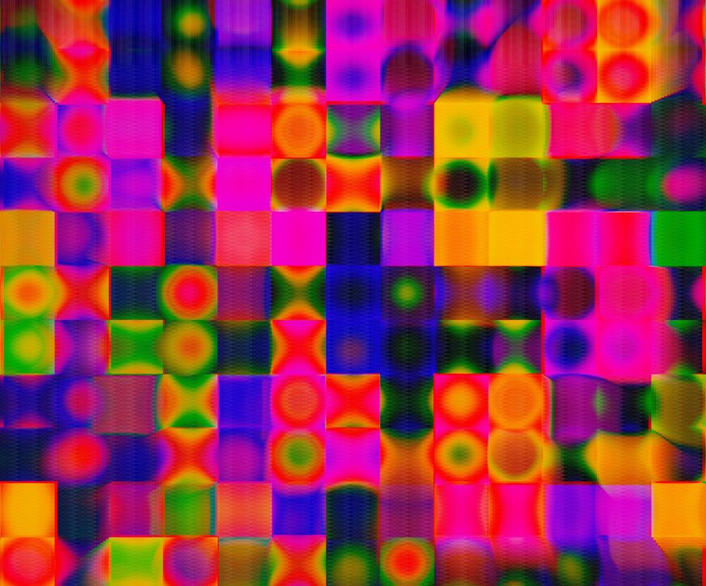
Mode 26 · WAVE CRYSTAL
Waves / tilings
Wave Crystal
Sine-Gordon breather lattice
The sine-Gordon equation u_tt − u_xx + sin u = 0 has exact breathers — solitons that stay put and pulse: u = 4 arctan[(κ/ω) sin(ωt) / cosh(κx)] with κ = √(1−ω²). Tile that 1-D profile on a lattice and you get a crystal of oscillating energy knots. Distinct from cymatics (standing linear waves) and from plane-wave interference. Bass rides ω so the cores flash with the low end.
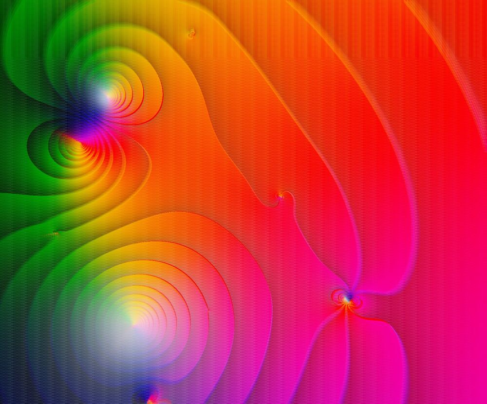
Mode 27 · PHASE PORTAL
Complex analysis
Phase Portal
Continued-fraction phase portrait
Evaluate a finite continued fraction f = b₁ + a₂/(b₂ + a₃/(…)) with the Wallis recurrence, coefficients depending on z. The result is a rational function; zeros and poles are counter-rotating pinwheels under domain colouring. Iso-modulus shells telescope. Audio drifts the denominators so singularities migrate and annihilate. The phase portrait is exact for whatever f the coefficients define; the coefficient path itself is an artistic construction (one of the workflow-invented modes).
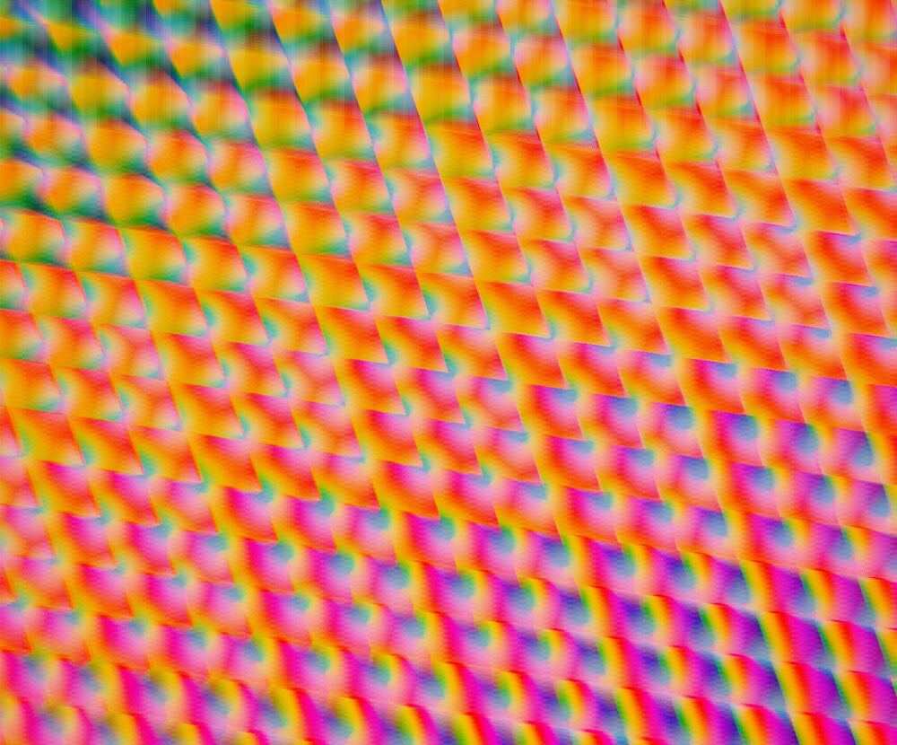
Mode 28 · VORTEX FIELD
Dynamics / physics
Vortex Condensate
Abrikosov lattice
In a type-II superconductor or a rotating BEC, magnetic field / angular momentum is quantized into vortices: |ψ| → 0 at each core and arg ψ winds +1. They pack into a triangular (Abrikosov) lattice. This mode builds ψ as a product over nearby cores (tanh amplitude, summed arguments) — a neighbourhood of the lattice, not a solved Gross–Pitaevskii ground state. Dark cores, phase fringes, beat-synced glints.
This host vs original ENTHEA
Upstream is a single HTML file meant to run in Chrome with mic, tab capture,
MIDI, and its own HUD.
github.com/elder-plinius/ENTHEA.
This app hides that HUD on boot and drives the engine from native playback.
Upstream control
In this Winamp host
Mic / file / tab audio
Native AVAudioEngine tap only. No mic, no drone, no tab capture.
Keyboard (space, A, D, 1–8, …)
Disabled. Collides with play/pause and playlist keys.
Flicker ~10 Hz
Forced off. Alpha-band photic drive is real science (Ganzflicker) and also a seizure risk.
Wallpaper lens (17 wallpaper groups)
Not exposed.
Breath pacer, math HUD, MIDI-learn, snapshots
Not exposed.
Begin trip arc (timed come-up)
Not started. LOOKS apply the visual signature only.
Upload image
Automatic from embedded album art → Image Warp.
Fullscreen
Host theater on the panel window, not the page’s requestFullscreen.
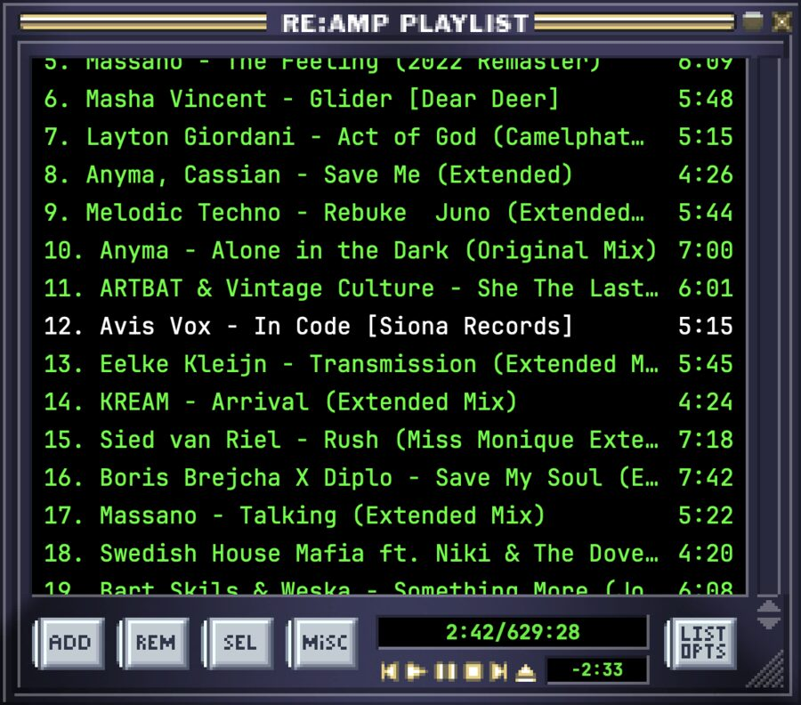
Playlist stays a Classic pledit. ENTHEA never sees the files; Swift analyses them offline.
Bibliography
Canonical write-up, with verified vs speculative called out in situ:
ENTHEA SCIENCE.md.
Vendor pin and patch list: Resources/Enthea/VENDOR.md.
Bressloff, Cowan, Golubitsky, Thomas & Wiener (2001). Phil. Trans. R. Soc. B 356:299–330. doi:10.1098/rstb.2000.0769